Academic research → live protocol
DPO2U
This is DPO2U.
The HTTPS of compliance — for Web2, Web3, and the agent economy.
Beat 1 Hello everyone. The research behind what you're about to see started as an academic study and is now a live protocol. This is DPO2U.
Founder
Frederico Santana.
Specialist in Compliance & Data Protection. Master's in Law, Technology & Innovation, FGV. A decade studying the technological mechanisms of cooperation — DPO2U is the practical outcome.
Beat 2 I'm Frederico Santana, a specialist in Compliance and Data Protection with a Master's in Law, Technology, and Innovation from FGV. For a decade I've studied technological mechanisms for cooperation — DPO2U is the practical outcome of that research.
The cost of theater
€1.2B
Meta's 2023 privacy fines — with a full compliance program, a named DPO, and a mountain of PDFs. The PDF stopped nothing.
Compliance today is theater: documents nobody reads, proving nothing.
Beat 3 One point two billion euros — what Meta paid in privacy fines in 2023, with a full program, a named DPO, a mountain of PDFs. The PDF stopped nothing. Compliance today is theater: documents nobody reads, proving nothing.
Origin
Compliance was born
as a wax seal.
A thousand years binding, the moment hot wax met paper. Demonstrable. Unforgeable. Verifiable by anyone. We digitized everything — and lost the seal.
Beat 4 Compliance was born as a wax seal. For a thousand years an act became binding the moment hot wax met paper — demonstrable, unforgeable, verifiable by anyone who could see it. We digitized everything, and we lost the seal.
Today
Compliance is theater.
PDFs no one reads. Spreadsheets no one opens. And when proof is required, companies are forced to hand sensitive data to third parties.
Beat 5 Today, compliance is theater. PDFs no one reads, spreadsheets no one accesses. And when proof is required, companies are forced to share sensitive data with third parties.
The trap
Prove, and you violate.
Protect, and you can't prove.
Proving means exposing customer data — and that collides head-on with LGPD.
Beat 6 Proving means exposing customer data — and that collides head-on with LGPD. Prove, and you violate. Protect, and you can't prove.
The break
The score stays private.
The proof is public.
DPO2U breaks the trap. One API call generates a zero-knowledge attestation, sealed on Stellar. The regulator doesn't believe — it verifies.
Beat 7 DPO2U breaks the trap. The score stays private. The proof is public. One API call generates a zero-knowledge attestation, sealed on Stellar. The regulator doesn't believe — it verifies.
Law into code · Dust Comply
Rules become circuits.
The seal funds itself.
An MCP that turns law into code. On Midnight, our self-funding agent is live — and now a paymaster: holders delegate idle DUST, keeping custody, and DPO2U seals compliance for any dApp, free. We call it Dust Comply — the ecosystem's accumulated DUST, managed to confer compliance.
Beat 8 · adapted We are an MCP that transforms law into code. Rules become circuits, evidence becomes on-chain attestations, audits become real-time cryptographic verification. On Midnight, DPO2U's self-funding agent is live: it stakes NIGHT, consumes DUST, seals with selective disclosure. We turned it into a paymaster — Dust Comply. NIGHT holders delegate idle DUST, keeping custody, and DPO2U seals compliance for any dApp, free. The ecosystem's accumulated DUST, managed by DPO2U to confer compliance.
Coverage
Privacy regimes and AI governance. Accessible via any wallet, smart contract, or AI agent. The only protocol that seals both — enabling regulated, institutional real-world assets.
Beat 9 We operate across 24 jurisdictions, serving 67 countries, spanning privacy regimes and AI governance frameworks. Accessible via any wallet, smart contract, or AI agent. We are the only protocol that seals both regimes, enabling regulated, institutional real-world assets.
The model
Free to adopt. Paid at scale.
Free · dAppsThe adoption moat.
Any dApp seals compliance at zero cost — that's how a protocol wins.
Paid · big playersCompliant DUST capacity.
Institutions, RWA issuers, high-volume agents pay to tap the pool — gated by the seal.
$23B market today → $105B by 2034 · three tiers · software margins >80% · a fraction of consulting cost.
Beat 10 · adapted Compliance at the speed of software, not the speed of legal. A $23B market today, $105B by 2034. The model is freemium: compliance is free for dApps — how a protocol wins adoption. The revenue is the big players — institutions, RWA issuers, high-volume agents — who pay to tap DPO2U's compliant DUST capacity, with the seal as the gate. Three tiers, software margins above 80%, a fraction of consulting cost.
One protocol, both regimes
The trust and capacity layer.
Today's regulated markets; tomorrow's machine economy. With Dust Comply, the same seal becomes the compliant gas that lets regulated players operate on-chain.
Beat 11 · adapted One protocol, both regimes: today's regulated markets, tomorrow's machine economy. And the same seal reaches further than compliance — with Dust Comply it becomes the trust and capacity layer of the ecosystem: the compliant gas that lets regulated players operate on-chain.
Traction
Already sealed.
Sensitive data never moves — only the proof that the rule was met. And the paymaster is live on Midnight preview: delegate → seal → confer.
Beat 12 · adapted Already sealed: three live clients across three regulated worlds — health, energy, and DePIN. The sensitive data never moves, only the proof that the rule was met. And the paymaster is live on Midnight preview — delegate, seal, confer — proven end to end.
The ask
Capital for the seal.
SAFE · $3M post-money · 18 months
To land the regulatory wave.
Beat 13 Capital for the seal: we're in a SAFE round with a $3 million post-money valuation, 18 months to land the regulatory wave.
The inevitability
Regulation will move on-chain.
The question is who builds the protocol.
That's us. DPO2U — the HTTPS of compliance for Web2, Web3, and the agent economy.
Beat 14 The question isn't whether regulation will move on-chain. It's who will build the protocol it runs on. That's us. We are DPO2U — the HTTPS of compliance for Web2 and Web3, and for the agent economy.
Seal with us.
Thank you.
Beat 15 Seal with us. Thank you.